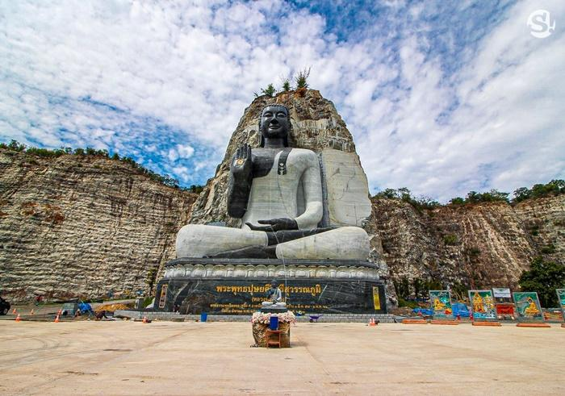

สถานที่ท่องเที่ยวของอำเภออู่ทอง

พระพุทธรูปแกะสลักผาหิน
พระพุทธรูปแกะสลักหน้าผาหิน มีชื่อว่า พระพุทธปุษยคีรีศรีสุวรรณภูมิ หรือ หลวงพ่ออู่ทอง
ตั้งอยู่ใกล้วัดเขาทำเทียม ที่หน้าผามังกรบิน ณ พุทธมหาสถานเมืองโบราณอู่ทอง อำเภออู่ทอง
จังหวัดสุพรรณบุรีองค์หลวงพ่ออู่ทอง มีความสูง 108 เมตร ฐานกว้าง 88 เมตร หน้าตักกว้าง 65 เมตร อยู่ในพื้นที่ราว 100 ไร่
อำเภอเมืองสุพรรณบุรี ก่อตั้งขึ้นเพื่อนำเสนอเรื่องราวความเป็นมาของชาวจีนในประเทศไทย
ป็นพระพุทธรูป แกะสลักหน้าผาใหญ่ที่สุด ในโลก ด้วยความสวยงามแปลกตาและหน้าผาหินที่รายล้อมองค์พระพุทธรูป
ทำให้นักท่องเที่ยวต่าง แวะเวียนมาทำบุญ ถ่ายภาพอย่างไม่ขาดสาย
ตำแหน่งที่ตั้ง
ศาลเจ้าพ่อพระยาจักร
ศาลเจ้าพ่อพระยาจักรที่ภายในประดิษฐาน “เจ้าพ่อพระยาจักร” สิ่งศักดิ์สิทธิ์คู่บ้านคู่เมืองอู่ทอง
จ้าพ่อพระยาจักร เป็นหนึ่งในศูนย์รวมจิตใจของชาวอู่ทอง มีเรื่องราวความศักดิ์สิทธิ์ ปาฏิหาริย์ของท่าน เล่าขานกันมามากมาย
แต่ที่โดดเด่นที่สุด คือ เหตุการณ์ไฟไหม้ครั้งใหญ่ที่ชาวอู่ทอง ส่งผลให้ร้านค้ารอบศาลเจ้าพ่อพระยาจักรถูกไฟไหม้วอดวายแต่น่าแปลก
ที่ศาลเจ้าพ่อพระยาจักรกลับไม่ได้รับความเสียหายจากเปลวไฟซึ่งเป็นเรื่องที่น่าอัศจรรย์ ด้วยกิตติศัพท์ความศักดิ์สิทธิ์ของเจ้าพ่อพระยาจักร
ทำให้แต่ละวันมีคนเดินทางมาบนบานศาลกล่าวท่านเป็นจำนวนมากโดยมีความเชื่อว่าการไหว้เจ้าพ่อพระยาจักรจะช่วยให้แคล้วคลาด
ปลอดภัยจากภยันตรายทั้งปวง อีกทั้งยังทำให้อยู่เย็นเป็นสุข เสริมมงคลชีวิต
ตำแหน่งที่ตั้ง

วัดเขาดีสลัก
วัดที่สวยงามตั้งอยู่บนยอดเขา ภายในประดิษฐานรอยพระพุทธบาทมงคล 108 ประการ อายุนับพันปี สร้างด้วยหินทรายแดง
โดยกรมศิลปากรได้ขึ้นทะเบียนเป็นโบราณวัตถุและสร้างมณฑปทรงไทยสวยวิจิตรครอบไว้ ทางวัดเขาดีสลักปรับปรุงภูมิทัศน์บนยอดเขา
มองเห็นวิวทิวทัศน์สวยงามในเขตอำเภออู่ทองโดยรอบ
ตำแหน่งที่ตั้ง